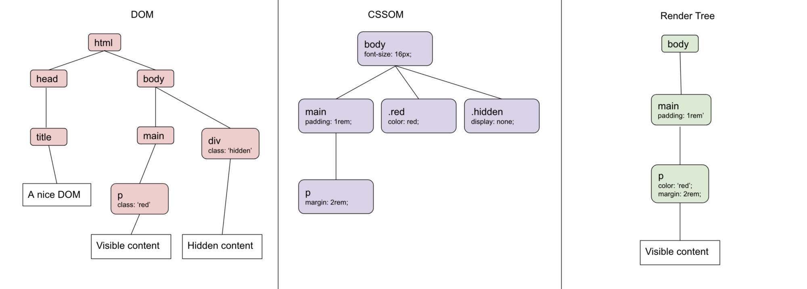
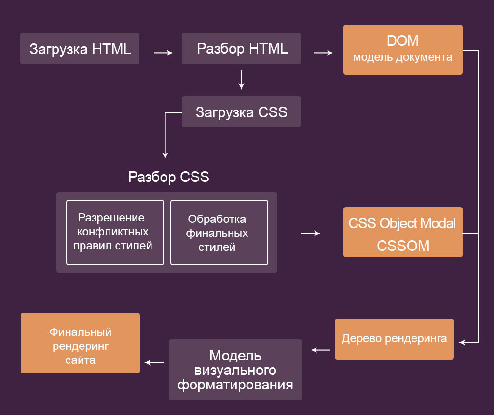
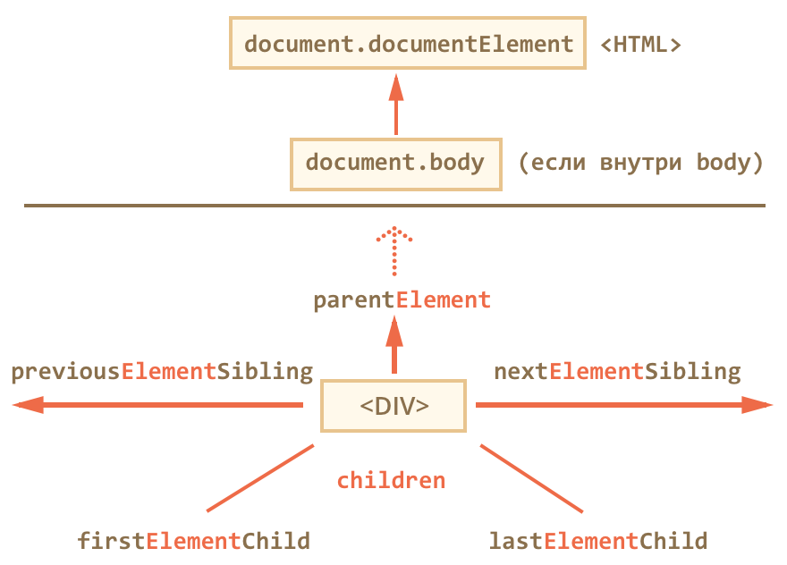

<!--Отрисовка DOM (Document Object Model) происходит в несколько этапов:
1.	Парсинг HTML: Браузер начинает с загрузки и парсинга HTML-кода. Он анализирует каждый тег, атрибуты и содержимое, создавая древовидную структуру DOM.
2.	Построение DOM-дерева: Браузер строит DOM-дерево, которое представляет иерархическую структуру элементов HTML-документа. Каждый HTML-тег становится узлом в дереве, а текстовое содержимое становится текстовыми узлами.
3.	Вычисление стилей (CSSOM): После построения DOM-дерева браузер начинает вычислять стили для каждого элемента. Он применяет правила CSS из подключенных таблиц стилей и встроенных стилей, чтобы определить, как должен быть отображен каждый элемент.
4.	Построение CSSOM: Браузер строит CSSOM (CSS Object Model), представляющий иерархическую структуру стилей. CSSOM соединяется с DOM-деревом, чтобы создать Render Tree (дерево отображения).
5.	Построение Render Tree: Render Tree создается путем комбинирования DOM-дерева и CSSOM. Он содержит только элементы, которые должны быть отображены на странице. Невидимые элементы, такие как <script> или скрытые элементы, не включаются в Render Tree.
6.	Расчет геометрии: Браузер определяет размеры и позиции каждого элемента в Render Tree, основываясь на его стилях, содержимом и других свойствах.
7.	Отрисовка: На этом этапе браузер использует информацию о геометрии каждого элемента и выполняет отрисовку на экране. Он преобразует Render Tree в пиксельное представление, учитывая слои и стили, и отображает его на экране.
8.	Дополнительные этапы: После отрисовки могут происходить дополнительные этапы, такие как растеризация (преобразование в изображение) и композитинг (смешивание слоев для формирования окончательного изображения).-->

<!--//раскомментить весь блок html ctrl+shift+/-->
<!--<!DOCTYPE html>-->
<!--<html>-->
<!--<head>-->
<!--    <meta charset="UTF-8">-->
<!--    <title>CSS-дерево</title>-->
<!--</head>-->
<!--<body>-->
<!---->
<!--<p>Парсинг HTML -> древовидная структура DOM</p>-->
<!--<p>Построение DOM-дерева -> HTML-тег становится узлом</p>-->
<!--<p>Вычисление стилей (CSSOM) -> стили для каждого элемента</p>-->
<!--<p>Построение CSSOM -> CSSOM + DOM = Render Tree (дерево отображения)</p>-->
<!--<p>Построение Render Tree -> только элементы, которые должны быть отображены на странице</p>-->
<!--<p>Расчет геометрии -> размеры и позиции каждого элемента</p>-->
<!--<p>Отрисовка -> Render Tree  &#45;&#45; >  пиксельное представление</p>-->
<!--<p>Дополнительные этапы -> растеризация, композитинг</p>-->
<!---->
<!--</body>-->
<!--</html>-->


<!--Изображения в DOM появляются в несколько этапов:
1.	Парсинг HTML: Браузер начинает с загрузки и парсинга HTML-кода. Когда браузер встречает тег  с атрибутом src, он создает элемент  в DOM-дереве и начинает процесс загрузки изображения.
2.	Запрос к серверу: Браузер отправляет запрос на сервер, указанный в атрибуте src тега , чтобы получить содержимое изображения.
3.	Загрузка изображения: Сервер отвечает на запрос и передает содержимое изображения в виде байтового потока. Браузер начинает загрузку изображения.
4.	Отображение заглушки: Во время загрузки изображения браузер может отобразить заглушку вместо фактического изображения. Заглушка обычно представляет собой пустой контейнер с заданными размерами, показывающий, что изображение находится в процессе загрузки.
5.	Завершение загрузки: Когда изображение полностью загружено, браузер получает все необходимые байты и обрабатывает их.
6.	Создание текстурного объекта: Браузер создает текстурный объект для изображения, который будет использоваться для его отображения на экране. Этот объект содержит пиксельные данные изображения.
7.	Расчет геометрии: Браузер определяет размеры и позицию изображения внутри DOM-дерева на основе его атрибутов, CSS-стилей и окружающего контента. Это включает в себя вычисление ширины, высоты, отступов и позиционирования изображения.
8.	Отображение изображения: На этом этапе браузер использует текстурный объект изображения и информацию о его геометрии, чтобы отобразить изображение на экране. Отображение может включать изменение размера изображения в соответствии с заданными размерами и применение других трансформаций, таких как масштабирование или поворот.-->


<!--Использование различных методов доступа к элементам-->

<!--<!DOCTYPE html> //раскомментить весь блок html
<html>
<head>
    <meta charset="UTF-8">
    <title>Использование различных методов доступа к элементам</title>
    <style>
        .container {
            display: flex;
            flex-wrap: wrap;
            justify-content: space-between;
            max-width: 600px;
            margin: 0 auto;
        }

        .block {
            flex-basis: calc(33.33% - 10px);
            height: 200px;
            background-color: #f1f1f1;
            text-align: center;
            line-height: 200px;
            margin-bottom: 10px;
        }
    </style>
</head>
<body>
<h1>JavaScript с использованием различных методов доступа к элементам</h1>

<div class="container">
    <div id="myDiv" class="block">Элемент с ID</div>

    <div class="block">Элемент с классом</div>

    <p>Элементы с тегом:</p>
    <ul id="myList">
        <li>Элемент 1</li>
        <li>Элемент 2</li>
        <li>Элемент 3</li>
    </ul>

    &lt;!&ndash; Пример с querySelector &ndash;&gt;
    <div id="myQueryDiv" class="block">Элемент с querySelector</div>

    &lt;!&ndash; Пример с querySelectorAll &ndash;&gt;
    <div class="block">Элемент 1</div>
    <div class="block">Элемент 2</div>
    <div class="block">Элемент 3</div>
</div>

<script>
    // Получение элемента по ID с использованием getElementById
    let myElement = document.getElementById('myDiv');
    console.log(myElement.textContent); // Выводит содержимое элемента

    // Получение элементов по классу с использованием getElementsByClassName
    let myElements = document.getElementsByClassName('block');
    console.log(myElements.length); // Выводит количество элементов с классом 'block'

    // Получение элементов по тегу с использованием getElementsByTagName
    let myList = document.getElementsByTagName('li');
    console.log(myList.length); // Выводит количество элементов тега 'li'

    // Получение элемента с помощью querySelector
    let myQueryElement = document.querySelector('#myQueryDiv');
    console.log(myQueryElement.textContent);

    // Получение элементов с помощью querySelectorAll
    let myQueryElements = document.querySelectorAll('.block');
    console.log(myQueryElements.length);

    // Добавление обработчика события с помощью addEventListener
    myElement.addEventListener('click', function() {
        alert('Вы кликнули на элемент с ID');
    });
</script>
</body>
</html>-->

<!--querySelector-->


<!--Метод querySelector является мощным инструментом для выбора элементов на веб-странице с использованием селекторов CSS. Он позволяет получить первый элемент, соответствующий указанному селектору.

Преимущества querySelector:

1.	Гибкость: querySelector поддерживает широкий спектр селекторов CSS, включая классы, идентификаторы, теги, псевдоклассы и псевдоэлементы. Это позволяет точно выбирать элементы на основе их структуры и свойств.
2.	Удобство: В отличие от других методов доступа к элементам, таких как getElementById, getElementsByClassName и getElementsByTagName, querySelector позволяет получить элементы с помощью одного универсального метода, не требуя дополнительных вызовов функций для разных типов выборок.
3.	Возможность выбора сложных структур: querySelector может использоваться для получения элементов вложенных структур, таких как элементы внутри других элементов, элементы внутри списков и так далее. С помощью комбинирования различных селекторов можно точно выбрать нужные элементы.

Недостатки querySelector:

1.	Ограничение на первый элемент: querySelector возвращает только первый элемент, соответствующий заданному селектору. Если требуется получить все элементы, соответствующие селектору, следует использовать querySelectorAll.
2.	Поддержка в старых браузерах: Некоторые старые версии интернет-браузеров не полностью поддерживают querySelector. Если ваш проект требует обратной совместимости с такими браузерами, может потребоваться использовать альтернативные методы доступа к элементам.
3.	Производительность: В некоторых случаях querySelector может быть несколько медленнее, чем более специфичные методы доступа к элементам, такие как getElementById или getElementsByClassName. Тем не менее, в общем случае, разница в производительности обычно незначительна, и querySelector предоставляет более удобный и гибкий подход к выборке элементов.
Несмотря на некоторые ограничения и недостатки, querySelector является мощным и удобным инструментом для выборки элементов на веб-странице, особенно при использовании современных браузеров и с поддержкой новых возможностей языка JavaScript.-->

<!--<!DOCTYPE html>  //раскомментить весь блок html
<html>
<head>
    <meta charset="UTF-8">
    <title>Примеры использования querySelector</title>
</head>
<body>
<h1>Примеры использования querySelector</h1>

&lt;!&ndash;Использование querySelector для выборки элемента по идентификатору:&ndash;&gt;
<div id="myElement">Это элемент с идентификатором</div>

&lt;!&ndash;Использование querySelector для выборки элемента по классу:&ndash;&gt;
<div class="myClass">Это элемент с классом</div>

&lt;!&ndash;Использование querySelector для выборки элемента по тегу:&ndash;&gt;
<ul>
    <li>Элемент 1</li>
    <li>Элемент 2</li>
    <li>Элемент 3</li>
</ul>

&lt;!&ndash;Использование querySelectorAll для выборки всех элементов с определенным классом.&ndash;&gt;
<div class="myClass1">Элемент 1</div>
<div class="myClass1">Элемент 2</div>
<div class="myClass1">Элемент 3</div>

&lt;!&ndash;Использование querySelectorAll для выборки элементов с определенными атрибутами.&ndash;&gt;
<a href="#">Ссылка 1</a>
<a href="#">Ссылка 2</a>
<a href="#">Ссылка 3</a>

<script>
    var element = document.querySelector("#myElement");
    console.log(element.textContent); // Выводит текстовое содержимое элемента

    let element = document.querySelector(".myClass");
    console.log(element.textContent); // Выводит текстовое содержимое элемента

    let element = document.querySelector("li");
    console.log(element.textContent); // Выводит текстовое содержимое первого элемента li

    let elements = document.querySelectorAll(".myClass1");
    elements.forEach(function(element) {
        console.log(element.textContent); // Выводит текстовое содержимое каждого элемента
    });

    let links = document.querySelectorAll("a[href='#']");
    links.forEach(function(link) {
        console.log(link.textContent); // Выводит текстовое содержимое каждой ссылки с href="#"
    });
</script>
</body>
</html>-->


<!--addEventListener-->

<!--Метод addEventListener используется для привязки обработчика события к определенному элементу. Он позволяет реагировать на различные события, такие как клики, наведение курсора, отправка формы и т. д. Вот подробнее о addEventListener, его примерах, преимуществах и недостатках:

Где используется addEventListener:
•	Веб-страницы: addEventListener широко применяется на веб-страницах для добавления интерактивности и отклика на действия пользователей, такие как клики, наведение курсора, отправка форм и другие события.
•	Веб-приложения: addEventListener также используется в веб-приложениях для управления пользовательским взаимодействием и обработки событий, вызванных пользователем или системой.

Преимущества addEventListener:

1.	Гибкость: addEventListener позволяет добавлять несколько обработчиков событий к одному элементу или разным элементам, что обеспечивает гибкость в управлении событиями.
2.	Разделение логики: С помощью addEventListener можно разделить логику обработки событий от остальной части кода, что улучшает читаемость и обслуживаемость кода.
3.	Поддержка различных событий: addEventListener поддерживает широкий спектр событий, что позволяет обрабатывать разные типы действий пользователя.

Недостатки addEventListener:

1.	Совместимость со старыми браузерами: Некоторые старые версии интернет-браузеров могут не полностью поддерживать addEventListener. В таких случаях может потребоваться использовать альтернативные методы для привязки обработчиков событий.
2.	Обработка событий на динамически созданных элементах: Если элементы создаются динамически (после загрузки страницы), то обработчики событий могут не срабатывать на них. В таких случаях может потребоваться использовать делегирование событий или дополнительные проверки.
Несмотря на некоторые ограничения, addEventListener является мощным инструментом для управления событиями на веб-страницах и -->

<!--Примеры использования addEventListener:-->
<!--<!DOCTYPE html>  //раскомментить весь блок html
<html>
<head>
    <meta charset="UTF-8">
    <title>Пример HTML-документа</title>
</head>
<body>
&lt;!&ndash;Привязка обработчика события click к кнопке:&ndash;&gt;
<button id="myButton">Нажми меня</button>

&lt;!&ndash;Привязка обработчика события submit к форме:&ndash;&gt;
<form id="myForm">
    <input type="text" name="username" placeholder="Введите имя">
    <input type="submit" value="Отправить">
</form>

<script>

    let button = document.getElementById("myButton");
    button.addEventListener("click", function() {
        alert("Кнопка была нажата");
    });

    let form = document.getElementById("myForm");
    form.addEventListener("submit", function(event) {
        event.preventDefault(); // отменить стандартное поведение отправки формы
        let username = form.elements.username.value;
        alert("Привет, " + username + "! Форма была отправлена.");
    });

 /*   form - это переменная, которая содержит ссылку на элемент формы в HTML-документе. Она была получена с помощью метода getElementById, где "myForm" - это значение атрибута id элемента формы в HTML.

        .elements - это свойство объекта form, которое предоставляет доступ к коллекции элементов формы. Эта коллекция содержит все элементы формы, доступные по их именам.

        .username - это атрибут name поля ввода, к которому вы хотите получить доступ. В данном случае, username является именем поля ввода, из которого мы хотим извлечь значение.

        .value - это свойство элемента формы, которое содержит значение, введенное пользователем в поле ввода с указанным именем. Мы сохраняем это значение в переменную username.

        Таким образом, строка var username = form.elements.username.value; извлекает значение, введенное пользователем в поле ввода с именем username*/

</script>
</body>
</html>-->

<!--Недостаток про динамичность-->

<!--НЕ ЗНАЮ, ГДЕ НЕДОСТАТОК, КОД РАБОТАЕТ, CHAT GPT МНЕ ТОЖЕ КОД НЕ ПРИДУМАЛ-->

<!--<!DOCTYPE html> //раскомментить весь блок html
<html>
<head>
    <meta charset="UTF-8">
    <title>Пример HTML-документа</title>
</head>
<body>
<div id="container">
    <button id="addButton">Добавить элемент</button>
</div>

<script>
    let container = document.getElementById("container");
    let addButton = document.getElementById("addButton");
    let counter = 1;

    addButton.addEventListener("click", function() {
        let newButton = document.createElement("button");
        newButton.textContent = "Кнопка " + counter;
        container.appendChild(newButton);
        counter++;
    });

    container.addEventListener("click", function(event) {
        if (event.target.tagName === "BUTTON") {
            console.log("Вы кликнули по кнопке:", event.target.textContent);
        }
    });
</script>
</body>
</html>-->


<!--Помимо addEventListener, существуют и другие способы привязки обработчиков событий в JavaScript:
1.	Атрибут HTML-элемента: Вы можете добавить обработчик события непосредственно в атрибут HTML-элемента. Например:
<button onclick="myFunction()">Нажми меня</button>
function myFunction() {
console.log("Обработчик события кнопки");
}
2.	on[event] свойство: Вы можете использовать свойства on[event] для привязки обработчика к определенному событию элемента. Например:
<button id="myButton">Нажми меня</button>
document.getElementById("myButton").onclick = function() {
console.log("Обработчик события кнопки");
};
3.	onevent свойство: Некоторые события имеют соответствующие свойства onevent, которые можно использовать для привязки обработчиков. Например, для события onload окна:
window.onload = function() {
console.log("Обработчик события загрузки окна");
};
4.	DOM события: Некоторые старые методы по-прежнему используются для привязки обработчиков событий, такие как onclick, onmouseover, onkeydown и т.д. Однако, рекомендуется использовать addEventListener для новых проектов.
document.getElementById("myElement").onclick = function() {
console.log("Обработчик события клика на элементе");
};-->


<!--Разница между on[event] и onevent заключается в способе привязки обработчиков событий к элементам.

on[event] - это свойство элемента, которое позволяет привязать обработчик события напрямую к элементу. Например, onclick или onmouseover. Вы можете установить значение свойства on[event] равным функции, которая будет вызываться при возникновении события. Несмотря на то, что это простой способ привязки обработчиков, но он имеет ограничения, такие как возможность использования только одного обработчика для каждого события и отсутствие поддержки множественных обработчиков.-->

<!--<button onclick="myFunction()">Нажми меня</button>

<script>
    function myFunction() {
        console.log("Обработчик события кнопки");
    }
</script>-->

<!--onevent - это свойство элемента, которое предоставляет интерфейс для привязки обработчиков событий к элементу. Например, onclick, onload, onkeydown. Вы можете установить значение свойства onevent равным функции, так же как и в случае с on[event]. Однако, события, имеющие соответствующие свойства onevent, могут иметь только один обработчик. Если вы назначаете новое значение onevent, оно замещает предыдущий обработчик события.-->

<!--<button id="myButton">Нажми меня</button>

<script>
    document.getElementById("myButton").onclick = function() {
        console.log("Обработчик события кнопки");
    };
</script>-->


<!--Родственные отношения-->

<!--<!DOCTYPE html> //раскоменчивать весь html
<html>
<head>
    <meta charset="UTF-8">
    <title>Пример HTML-документа</title>
</head>
<body>

<div>
    <h1>Заголовок</h1>
    <p>Абзац 1</p>
    <p>Абзац 2</p>
    <ul>
        <li>Элемент 1</li>
        <li>Элемент 2</li>
        <li>Элемент 3</li>
    </ul>
</div>

<script>
    // со всплытием
   /* let parentElement = document.querySelector("div"); //раскоменчивать по блокам
    let previousElementSibling = parentElement.previousElementSibling;
    let nextElementSibling = parentElement.nextElementSibling;
    let firstElementChild = parentElement.firstElementChild;
    let lastElementChild = parentElement.lastElementChild;

    parentElement.addEventListener("click", function() {
        alert("Вы нажали на: " + parentElement.tagName);
    });

    previousElementSibling.addEventListener("click", function() {
        alert("Вы нажали на: " + previousElementSibling.tagName);
    });

    nextElementSibling.addEventListener("click", function() {
        alert("Вы нажали на: " + nextElementSibling.tagName);
    });

    firstElementChild.addEventListener("click", function() {
        alert("Вы нажали на: " + firstElementChild.tagName);
    });

    lastElementChild.addEventListener("click", function() {
        alert("Вы нажали на: " + lastElementChild.tagName);
    });*/


    //без всплытия
   /* let parentElement = document.querySelector("div");
    let previousElementSibling = parentElement.previousElementSibling;
    let nextElementSibling = parentElement.nextElementSibling;
    let firstElementChild = parentElement.firstElementChild;
    let lastElementChild = parentElement.lastElementChild;

    parentElement.addEventListener("click", function(event) {
        event.stopPropagation();
        alert("Вы нажали на: " + parentElement.tagName);
    });

    previousElementSibling.addEventListener("click", function(event) {
        event.stopPropagation();
        alert("Вы нажали на: " + previousElementSibling.tagName);
    });

    nextElementSibling.addEventListener("click", function(event) {
        event.stopPropagation();
        alert("Вы нажали на: " + nextElementSibling.tagName);
    });

    firstElementChild.addEventListener("click", function(event) {
        event.stopPropagation();
        alert("Вы нажали на: " + firstElementChild.tagName);
    });

    lastElementChild.addEventListener("click", function(event) {
        event.stopPropagation();
        alert("Вы нажали на: " + lastElementChild.tagName);
    });*/

</script>
</body>
</html>-->

<!--Свойство innerHTML и свойство textContent являются двумя разными способами работы с содержимым элементов в JavaScript.

innerHTML позволяет получать и устанавливать HTML-разметку внутри элемента, включая теги и их содержимое. Оно интерпретирует переданный код как HTML и может выполнять дополнительные операции, такие как создание и изменение элементов, добавление обработчиков событий и т. д.
textContent, с другой стороны, позволяет получать и устанавливать только текстовое содержимое элемента. Оно обрабатывает текст как сырой текст и не интерпретирует его как HTML-разметку.

Преимущества innerHTML:
•	Можно использовать для вставки сложной HTML-разметки со всеми ее возможностями.
•	Позволяет легко создавать и изменять структуру элементов, добавлять классы и другие атрибуты.
•	Удобен для динамической генерации и обновления содержимого элементов.
Недостатки innerHTML:
•	Возможна уязвимость безопасности, особенно если ввод пользователя или ненадежные данные вставляются в HTML-разметку. Необходимо быть осторожным и проверять ввод, чтобы избежать внедрения вредоносного кода.
•	Использование innerHTML может быть немного медленнее и требовать больше ресурсов, поскольку интерпретация HTML-разметки требует дополнительной обработки.

Преимущества textContent:
•	Безопасен для использования, поскольку обрабатывает текст как сырой текст и предотвращает внедрение вредоносного кода.
•	Более производителен, поскольку не требует интерпретации HTML-разметки.
Недостатки textContent:
•	Не позволяет использовать HTML-разметку или выполнять сложные операции с элементами.
•	Не подходит для вставки больших фрагментов HTML-кода или изменения структуры элементов.
В итоге, выбор между innerHTML и textContent зависит от конкретных требований и контекста вашего проекта. Если вам необходимо работать с HTML-разметкой и выполнить сложные манипуляции с элементами, innerHTML может быть полезным. Однако, если вам нужно только работать с текстовым содержимым элементов и безопасность играет важную роль, textContent является более предпочтительным вариантом.


В JavaScript существуют и другие способы работы с содержимым элементов, помимо innerHTML и textContent. Вот несколько альтернативных методов:

1.	innerText: Это свойство позволяет получать и устанавливать текстовое содержимое элемента, подобно textContent. Однако есть некоторые отличия в том, как они обрабатывают пробельные символы и скрытый текст. Например, innerText не включает скрытый текст (например, текст внутри элемента с установленным CSS-свойством display: none;), а также автоматически удаляет начальные и конечные пробелы.

let element = document.getElementById("myElement");
console.log(element.innerText); // Получение текстового содержимого элемента
element.innerText = "Новый текст"; // Установка нового текстового содержимого элемента

2.	textContent: Уже упомянуто в предыдущих ответах, textContent позволяет получать и устанавливать сырой текстовый контент элемента, включая пробельные символы и скрытый текст. Он не интерпретирует содержимое как HTML.

let element = document.getElementById("myElement");
console.log(element.textContent); // Получение текстового содержимого элемента
element.textContent = "Новый текст"; // Установка нового текстового содержимого элемента

3.	innerText vs textContent: Отличия между innerText и textContent могут быть незначительными, но в некоторых случаях они могут вести себя по-разному. Например, если в вашей разметке есть различные стили, влияющие на отображение текста (например, text-transform: uppercase;), innerText вернет текст, отформатированный с учетом этих стилей, в то время как textContent вернет оригинальный текст без применения стилей.

<div id="myElement" style="text-transform: uppercase;">Пример текста</div>
let element = document.getElementById("myElement");
console.log(element.innerText); // Вывод: "ПРИМЕР ТЕКСТА"
console.log(element.textContent); // Вывод: "Пример текста"

4.	nodeValue: Это свойство, доступное для узлов DOM, позволяет получать или устанавливать значение узла. Например, для текстового узла, nodeValue содержит текстовое содержимое этого узла.
let textNode = document.createTextNode("Новый текст");
console.log(textNode.nodeValue); // Получение значения текстового узла
textNode.nodeValue = "Измененный текст"; // Установка нового значения текстового узла

5.	createTextNode и appendChild: Вы можете создавать новые текстовые узлы с помощью функции createTextNode и добавлять их в элементы с помощью метода appendChild. Например:
Это позволяет создавать и добавлять текстовые узлы динамически.
Выбор конкретного метода зависит от ваших конкретных требований и контекста задачи. Если вам необходимо работать только с текстовым содержимым элементов, textContent обычно является наиболее предпочтительным выбором. Если вам нужно учитывать стили и скрытый текст, то innerText может быть полезен. nodeValue, createTextNode и appendChild особенно полезны, когда вам нужно создавать и динамически добавлять текстовые узлы.
let element = document.createElement("div");
let textNode = document.createTextNode("Новый текст");
element.appendChild(textNode);
console.log(element.innerHTML); // Вывод: "<div>Новый текст</div>"-->


<!--<!DOCTYPE html>-->
<!--<html>-->
<!--<head>-->
<!--    <meta charset="UTF-8">-->
<!--    <title>Пример HTML-документа</title>-->
<!--</head>-->
<!--<body>-->
<!--<h1>Привет, мир!</h1>-->
<!---->
<!--<p>Это пример простого HTML-документа.</p>-->
<!--</body>-->
<!--</html>-->